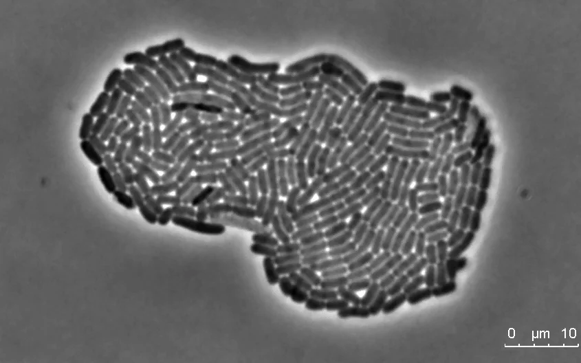
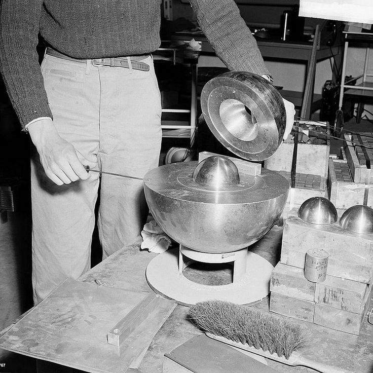
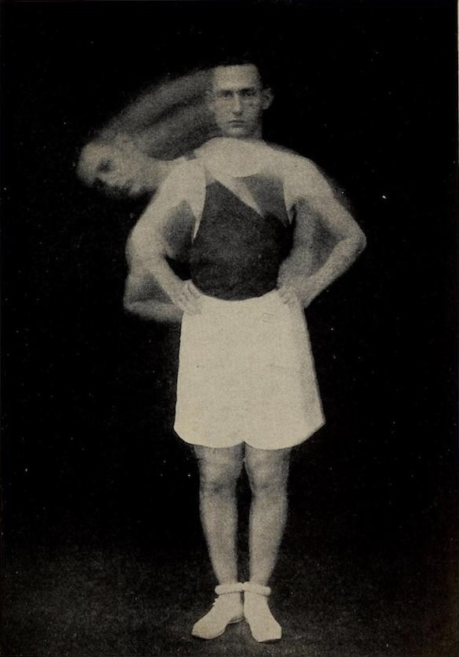
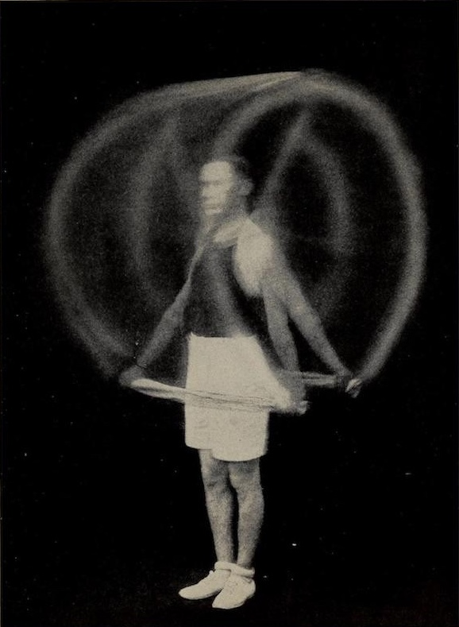
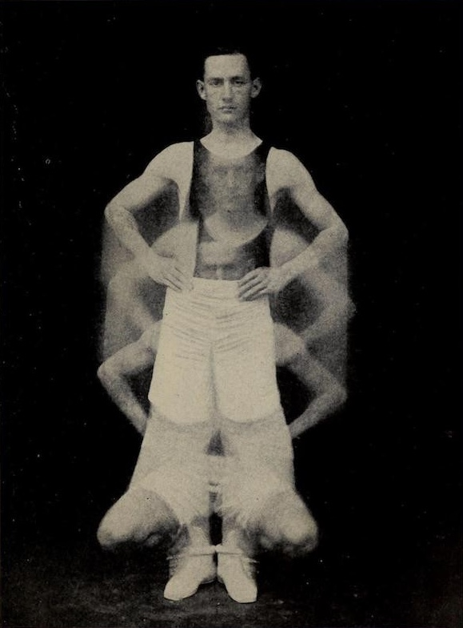
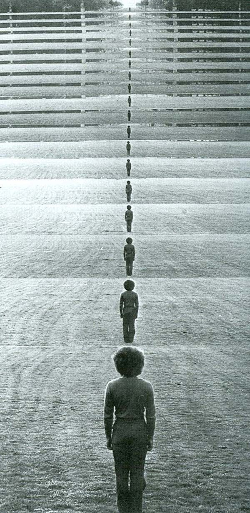

Specimen: Alch-129
Age: 42.0 yr
H: 1.68 m
M: 63.2 kg
HR: 078 bpm ☿ RR: 016 / min
Humors: 4 (choleric ↑)
Elix.: 0.3 flasks / hr
Met.: Lead → Gold
ATP: 5.8×10²⁰ mol/s
v: 0.9 m/s →
Eff.: 19 % (divine
variance ±)
When most people hear the word alchemy they imagine shadowed figures in ancient laboratories, stirring metals over fire in the hope of turning lead into gold, and history often dismisses them as misguided dreamers or failed scientists. Yet this popular image hides the deeper truth that alchemy was always a language of transformation, a way of describing the hidden processes by which one substance becomes another. In that sense, every human body is itself an alchemical vessel: lungs quietly distill oxygen from the air and fuse it with blood, the stomach dissolves grains and fruits into energy-rich compounds, muscles convert those compounds into motion, and within the brain, electrical signals give rise to thought, memory, and imagination. What seems ordinary—eating, breathing, moving—is in fact a constant sequence of transmutations, where matter is endlessly reworked into life. While we have been misinformed into believing alchemy was only superstition, the truth is that the alchemy of the human body is real, grounded in biology and chemistry, yet no less wondrous than the myths. We are living crucibles, philosophers’ stones made flesh, transforming the common into the miraculous with every heartbeat and every breath.
Specimen: CELL
Age: 0 hr
D: 20 µm
M: 1.1 ng
HR: 000 bpm
RR: 000 / min
ATP: 1.0×10⁷ mol/s
VO₂: 2.1×10⁻¹⁶ L / s
CO₂: 1.8×10⁻¹⁶ L / s
DNA: 6.4×10⁹ bp
Rib.: 10⁶ units
v: 0.02 µm/s →
Eff.: 38 %
Specimen: MYOCYTE
(Muscle Cell)
Age: 12 yr
L: 80 µm
M: 6.5 ng
HR: sync
RR: sync
ATP: 1.6×10⁹ mol/s
VO₂: 3.2×10⁻¹⁶ L / s
CO₂: 2.9×10⁻¹⁶ L / s
DNA: 6.4×10⁹ bp
v: 4.5 µm/s →
Eff.: 38 %
Specimen: NEURON
Age: 4 yr
L: 1.2 m
M: 4.3 ng
HR: 000 bpm
RR: 000 / min
ATP: 4.7×10⁸ mol/s
VO₂: 9.5×10⁻¹⁷ L / s
CO₂: 8.9×10⁻¹⁷ L / s
DNA: 6.4×10⁹ bp
Ax.: 1.3 m/s → 120 m/s
Eff.: 42 %
For most us, the word alchemy conjures up images of sorcerers in dim-lit chambers, bent over a bubbling cauldron, whispering incantations as they try to conjure gold from lead. We’ve learned the word alchemy to be synonymous with fantasy, a symbol of obsession and a dead science at best.
But this is a myth.
GENESIS
Specimen: ANGELUS (Homo caelestis, bio-alchemica)
Age: timeless
H: 2.1 m (wingspan: 4.8 m)
M: 72.0 kg (variable, luminal density)
HR: 000 → harmonic resonance
RR: 000 / min (respiration via photonic exchange)
VO₂: 0.0 L / min (light assimilation)
CO₂: 0.0 L / min
ATP: 1.0×10²⁴ mol/s (self-renewing flux)
Cells: ~3.0×10¹³ + bioluminal matter
Syn.: 1.0×10¹² / s (electro-ethereal conduction)
v: 3.0 m/s → trans-dimensional drift
Eff.: ∞ % (closed-loop transmutation)
From two cells, a spark.
Blood, bone, and breath take form.
In the dark, a heart begins
biology’s alchemy,
life unfolding
Shapeshifting
This idea of transformation is at the core of alchemy, and also at the core of what it means to be living.
When we speak of alchemy as fantasy, we neglect to understand that transformation is not mythical at all: it is biological, cultural, and constant.
Everything around us is constantly moving, evolving; tech, art, space, biology; everything.
Species: MONARCH BUTTERFLY (Danaus plexippus)
Age: ~21 d
L: 0.10 m
M: 0.5 g
HR: 150 bpm
RR: 12 / min
VO₂: 2.3 mL / g / h
CO₂: 2.1 mL / g / h
ATP: 3.5×10¹⁶ mol/s
Cells: ~1.0×10¹¹
Syn.: 8.2×10⁸ / s
v: 5.0 m/s →
Eff.: 22 %
Migration: 4,000 km ↓
Status: Near Threatened

System: CRISPR-Cas9
Function: Genome Editing
Input: DNA Sequence
Output: Designed Life
Status: Breakthrough Achieved (2012)
Humanity gains control over biology’s source code.
Nuclear
CRISPR: THE TOOL THAT REWROTE EVOLUTION
A molecular scalpel that can cut, edit, and reprogram DNA — the code of life itself.
A breakthrough that transformed genetics from observation into design.

Philosophers have long distinguished between poiesis, the creation of things through production, and praxis, the transformation of the human agent through action. Nuclear fusion embodies both.
Through poiesis, scientists recreate in the lab the processes that power the stars, converting hydrogen into helium and releasing immense energy — a modern alchemy that turns matter into light.
Through praxis, humanity itself is transformed, as the pursuit of fusion challenges our ingenuity, reshapes our understanding of physics, and pushes civilization toward a leap forward in energy, technology, and possibility.
System: Nuclear Fusion
Age: 13.8×10⁹ yr (stellar process)
Input: Hydrogen isotopes
Output: Helium + Energy
Temperature: ~150×10⁶ °C
Pressure: ~250×10⁶ atm
Energy Yield: 4.3×10⁻¹² J per reaction
Efficiency: ~0.7 %
Particles: ~10³⁰ / star
Plasma State: Ionized
Radiation: Gamma rays + neutrinos
Timescale: Continuous
Status: Transformative / Alchemy-like
Human Impact: Leap Forward



Figure 1. HUMAN TRANSFORMATION: SIDE-ARCH TRUNK BEND
Figure 2. HUMAN TRANSFORMATION: SHOULDER STRAIGHTENING WITH TOWEL
Figure 3. HUMAN TRANSFORMATION: QUARTER AND A HALF BEND OF KNEES
Multiverse

The concept of multiple universes, or the multiverse, arises from advancements in quantum physics and cosmology. Quantum theory reveals that particles can exist in multiple states at once, a principle known as superposition, suggesting that reality may branch into many possible outcomes.
These discoveries challenge the traditional, singular view of the universe and expand our understanding of existence itself. In a sense, quantum science mirrors the goals of alchemy; not in turning metals into gold, but in transforming how we perceive the structure of reality.
Where alchemy sought material transformation, modern physics seeks intellectual and conceptual transformation, redefining what it means to understand life, matter, and the cosmos.
Subject: Multiverse
Type: Quantum / Theoretical Construct
Dimensions: ≥11 (estimated)
Universes: ~∞ (diverging timelines)
Origin: Quantum Decoherence
State: Superpositional
Stability: Variable
Observation Limit: 1 / Reality
Temporal Branching: Continuous
Probability Collapse: Observer-Dependent
Energy Overlap: Negligible
Conscious Variants: ~10³⁰ (speculative)
Entanglement: Non-local
Status: Active / Unverified
Implication: Every choice, another world ↓
INFINITE timelines. INFINITE outcomes. Each choice divides reality, shaping countless versions of ourselves.
This idea of transformation is at the core of alchemy, and also at the core of what it means to be human. When we speak of alchemy as fantasy, we neglect to understand that transformation is not mythical at all: it is biological, cultural, and constant.
Our awareness of these small miracles shape us.
This idea of transformation is at the core of alchemy, and also at the core of what it means to be human. When we speak of alchemy as fantasy, we neglect to understand that transformation is not mythical at all: it is biological, cultural, and constant.
There are millions of cells inside of you, moving you, building you, and working to survive you.
In all of our bodies, we are at work transmuting food into energy, folding elements like zinc, iron and copper into blood and bone. We inhale oxygen, and through our lungs and bloodstream, it is converted into fuel for muscle and thought. To walk, to breathe, to grow; these are all processes of transmutation.
To see humans as alchemists is to see ourselves as beings of constant becoming.
We are not static creatures but raw materials in motion; cells regenerating, bones repairing, minds learning, societies reshaping. Alchemy has never been about the philosopher’s stone, or the pursuit of gold. It has always been about transformation; transformation as the essence of existence. In that sense, alchemy has never been myth. It exists now in the iron of our blood and the architecture of our cities. To dismiss alchemy is to forget that every human act of change - whether in body, mind, or matter - is an alchemical act. We are, each of us, living laboratories of transformation.